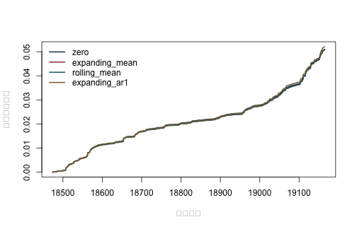

《財務時間序列分析》線上附錄
R06：無資料洩漏的樣本外評估
本附錄對應第 8 章。使用凍結股票面板建立等權教學投資組合，依時間切成訓練、驗證與測試期。驗證期只選滾動平均視窗；選定後凍結規格，在測試期比較零報酬、擴展平均、滾動平均與擴展 AR(1)。沒有隨機打散日期，也沒有使用測試期調整模型。
knitr::opts_chunk$set(
echo = TRUE, message = FALSE, warning = FALSE,
fig.width = 7, fig.height = 4.5
)
root_candidates <- c(".", "..")
is_root <- vapply(root_candidates, function(x) {
file.exists(file.path(x, "main.tex"))
}, logical(1))
stopifnot(any(is_root))
project_root <- root_candidates[which(is_root)[1]]
project_path <- function(...) file.path(project_root, ...)
固定資料與預測目標#
原檔為一欄日期與 89 檔股票日簡單報酬。本附錄每日等權平均，目標是預測下一個共同交易日的教學投資組合報酬。這不是官方 S\&P 500 指數，也未處理成分股生存者偏誤，不能用來宣稱可交易績效。
panel_path <- project_path(
"data", "processed", "sp500_returns_balanced_2013_2022.csv"
)
manifest_path <- project_path("data", "processed", "manifest.csv")
stopifnot(file.exists(panel_path), file.exists(manifest_path))
panel <- read.csv(panel_path, check.names = FALSE)
dates <- as.Date(panel$date)
R <- as.matrix(panel[, setdiff(names(panel), "date")])
storage.mode(R) <- "double"
portfolio_return <- rowMeans(R)
stopifnot(
!anyNA(dates), !anyNA(portfolio_return),
all(diff(dates) > 0), length(portfolio_return) == nrow(panel)
)
n <- length(portfolio_return)
c(
observations = n,
assets = ncol(R),
start = format(min(dates)),
end = format(max(dates))
)
## observations assets start end
## "2384" "89" "2013-01-03" "2022-06-22"
依時間固定三個區段#
前 60\% 是初始訓練期，接下來 20\% 是驗證期，最後 20\% 是一次性測試期。切點以觀察順序定義，再列出實際日期供審核。
train_end <- floor(0.60 * n)
validation_end <- floor(0.80 * n)
split_table <- data.frame(
segment = c("training", "validation", "test"),
first_index = c(1L, train_end + 1L, validation_end + 1L),
last_index = c(train_end, validation_end, n)
)
split_table$first_date <- dates[split_table$first_index]
split_table$last_date <- dates[split_table$last_index]
split_table$observations <- with(
split_table, last_index - first_index + 1L
)
split_table
## segment first_index last_index first_date last_date observations
## 1 training 1 1430 2013-01-03 2018-09-06 1430
## 2 validation 1431 1907 2018-09-07 2020-07-30 477
## 3 test 1908 2384 2020-07-31 2022-06-22 477
一個起點 \(t\) 只能使用第 1 至 \(t\) 筆報酬，並預測第 \(t+1\) 筆。下列函數把資料邊界寫進回傳值，便於查核。
單一起點預測函數#
forecast_at_origin <- function(y, origin, model, window = NULL) {
stopifnot(origin >= 3L, origin < length(y))
if (model == "zero") {
pred <- 0
training_start <- 1L
} else if (model == "expanding_mean") {
training_start <- 1L
pred <- mean(y[training_start:origin])
} else if (model == "rolling_mean") {
stopifnot(!is.null(window), origin >= window)
training_start <- origin - window + 1L
pred <- mean(y[training_start:origin])
} else if (model == "expanding_ar1") {
training_start <- 1L
y_train <- y[training_start:origin]
X <- cbind(1, y_train[-length(y_train)])
target <- y_train[-1]
beta <- qr.solve(X, target)
pred <- beta[1] + beta[2] * y[origin]
} else {
stop("未知模型。")
}
data.frame(
origin = origin,
target_index = origin + 1L,
training_start = training_start,
training_end = origin,
forecast = as.numeric(pred),
actual = y[origin + 1L]
)
}
evaluate_origins <- function(y, origins, model, window = NULL) {
out <- do.call(rbind, lapply(origins, function(o) {
forecast_at_origin(y, o, model, window)
}))
out$model <- model
out$window <- if (is.null(window)) NA_integer_ else as.integer(window)
out$error <- out$actual - out$forecast
stopifnot(
all(out$training_end == out$origin),
all(out$training_end < out$target_index)
)
out
}
驗證期只用來選滾動視窗#
候選視窗為 60、125、250 個共同交易日。每個起點都只以當時往前的固定長度平均形成預測。
validation_origins <- train_end:(validation_end - 1L)
window_grid <- c(60L, 125L, 250L)
validation_results <- lapply(window_grid, function(w) {
evaluate_origins(
portfolio_return, validation_origins,
model = "rolling_mean", window = w
)
})
validation_score <- data.frame(
window = window_grid,
RMSE = vapply(validation_results, function(z) {
sqrt(mean(z$error^2))
}, numeric(1)),
MAE = vapply(validation_results, function(z) {
mean(abs(z$error))
}, numeric(1))
)
validation_score
## window RMSE MAE
## 1 60 0.01737418 0.01007542
## 2 125 0.01724110 0.01005148
## 3 250 0.01719964 0.01000231
selected_window <- validation_score$window[
which.min(validation_score$RMSE)
]
selected_window
## [1] 250
視窗只依驗證 RMSE 選一次。接下來不因測試結果改變。
一次性測試期#
test_origins <- validation_end:(n - 1L)
test_results <- rbind(
evaluate_origins(
portfolio_return, test_origins, "zero"
),
evaluate_origins(
portfolio_return, test_origins, "expanding_mean"
),
evaluate_origins(
portfolio_return, test_origins, "rolling_mean",
window = selected_window
),
evaluate_origins(
portfolio_return, test_origins, "expanding_ar1"
)
)
test_results$origin_date <- dates[test_results$origin]
test_results$target_date <- dates[test_results$target_index]
test_results$training_start_date <- dates[test_results$training_start]
test_results$training_end_date <- dates[test_results$training_end]
head(test_results, 8)
## origin target_index training_start training_end forecast actual model
## 1 1907 1908 1 1907 0 -0.001079797 zero
## 2 1908 1909 1 1908 0 0.004716595 zero
## 3 1909 1910 1 1909 0 0.007220686 zero
## 4 1910 1911 1 1910 0 0.007924137 zero
## 5 1911 1912 1 1911 0 0.004493475 zero
## 6 1912 1913 1 1912 0 0.002346122 zero
## 7 1913 1914 1 1913 0 0.003915023 zero
## 8 1914 1915 1 1914 0 -0.005279467 zero
## window error origin_date target_date training_start_date
## 1 NA -0.001079797 2020-07-30 2020-07-31 2013-01-03
## 2 NA 0.004716595 2020-07-31 2020-08-03 2013-01-03
## 3 NA 0.007220686 2020-08-03 2020-08-04 2013-01-03
## 4 NA 0.007924137 2020-08-04 2020-08-05 2013-01-03
## 5 NA 0.004493475 2020-08-05 2020-08-06 2013-01-03
## 6 NA 0.002346122 2020-08-06 2020-08-07 2013-01-03
## 7 NA 0.003915023 2020-08-07 2020-08-10 2013-01-03
## 8 NA -0.005279467 2020-08-10 2020-08-11 2013-01-03
## training_end_date
## 1 2020-07-30
## 2 2020-07-31
## 3 2020-08-03
## 4 2020-08-04
## 5 2020-08-05
## 6 2020-08-06
## 7 2020-08-07
## 8 2020-08-10
score_one <- function(z) {
c(
observations = nrow(z),
RMSE = sqrt(mean(z$error^2)),
MAE = mean(abs(z$error)),
mean_error = mean(z$error)
)
}
score_table <- do.call(
rbind,
lapply(split(test_results, test_results$model), score_one)
)
round(score_table, 6)
## observations RMSE MAE mean_error
## expanding_ar1 477 0.010446 0.007750 -0.000145
## expanding_mean 477 0.010314 0.007626 -0.000125
## rolling_mean 477 0.010313 0.007622 -0.000427
## zero 477 0.010335 0.007668 0.000700
分數是固定資料期間的描述，不代表未來必然維持相同排序。日平均報酬很小，因此任何改善都應連同抽樣不確定性、交易成本與市場穩定性判讀。
逐期誤差比單一 RMSE 更可審核#
models <- unique(test_results$model)
colors <- c("#173B57", "#A34045", "#1D6D73", "#8A6D3B")
plot(
NA,
xlim = range(dates[test_origins + 1L]),
ylim = c(0, max(vapply(
split(test_results$error, test_results$model),
function(e) sum(e^2),
numeric(1)
))),
xlab = "目標日期", ylab = "累積平方誤差"
)
for (j in seq_along(models)) {
z <- test_results[test_results$model == models[j], ]
lines(
z$target_date, cumsum(z$error^2),
col = colors[j], lwd = 2
)
}
legend(
"topleft", models, col = colors[seq_along(models)],
lty = 1, lwd = 2, bty = "n"
)

累積損失若在少數危機日突然跳升，平均 RMSE 可能主要由那些日期主導。這不是刪除危機日的理由，而是提示應分開報告市場狀態與結構穩定性。
程式防漏檢核#
leakage_audit <- within(
test_results[, c(
"model", "origin_date", "target_date",
"training_start_date", "training_end_date"
)],
valid_timing <- training_end_date == origin_date &
training_end_date < target_date
)
table(leakage_audit$valid_timing)
##
## TRUE
## 1908
stopifnot(all(leakage_audit$valid_timing))
若未來加入標準化、PCA、變數選擇或缺值填補，這些步驟也必須搬進 forecast_at_origin，且只對 training_start:training_end 配適。先用全樣本轉換再呼叫此函數仍然是資料洩漏。
可重現報告應保留#
- 凍結資料檔與 manifest 檢查碼；
- 三段日期、每個預測起點與目標日期；
- 候選視窗與驗證分數；
- 規格凍結時間；
- 測試期逐筆預測、誤差、訓練起訖日；
- RMSE、MAE、平均誤差與簡單基準；
- 任何事後敏感度分析都和主要測試結果分開標示。